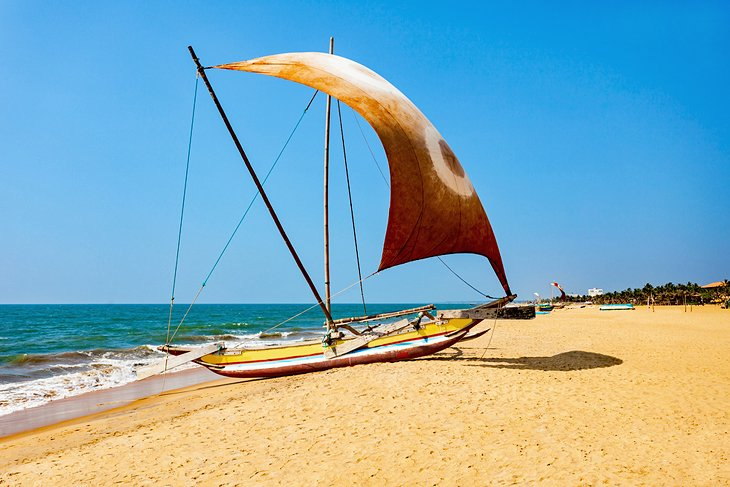

Unawatuna and its coastline are located near the city of Galle. It was the capital of the country during the colonial period of Sri Lanka, Portugal and the Netherlands. Unawatuna is found about 5 km outside Galle.
Unawatuna
Kalkudah
Mirissa is located on the southern tip of the island. Due to its beauty and proximity to Colombo, it is about a two hour drive from the capital. The small coastal town and its large beach are made up of palm groves. The city is located on a small hill behind the beach.
Mirissa
Arugam Bay

An hour's drive from Colombo is Negombo. Beach bands and musicians also play, adding to the live vibe. Renting beach chairs and umbrellas from entrepreneurial residents makes the beach wider and flatter. Here you can do water sports.
Negombo